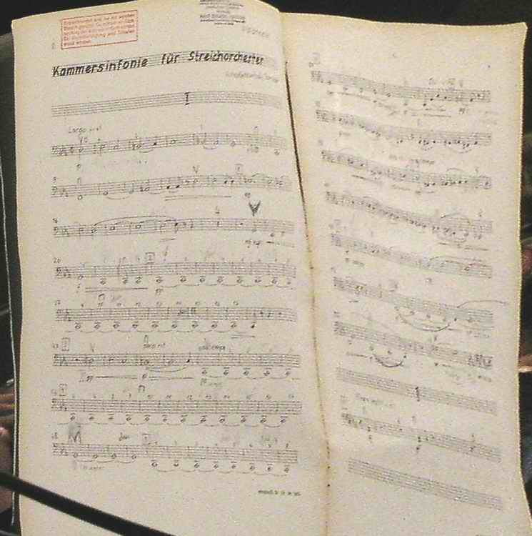

Oeuvres
Works

Identification des catalogues thématiques d'oeuvres
Identification of thematic catalogues of works
Catalogues retrouvés dans ce site
Catalogues found on this site
Catalogues retrouvés sur d'autres sites
Catalogues found on other sites
Retour au menu principal
Return to main menu